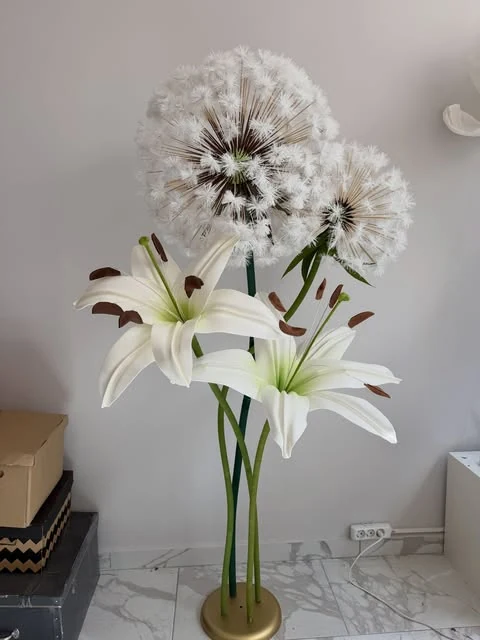
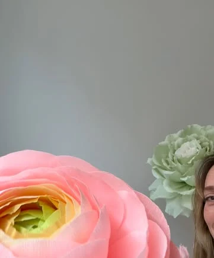
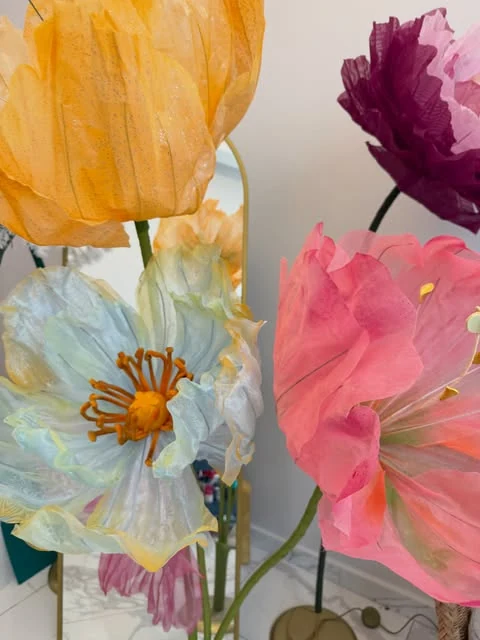
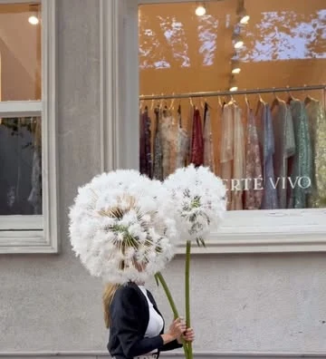
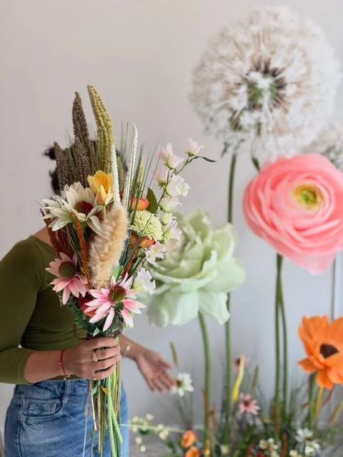
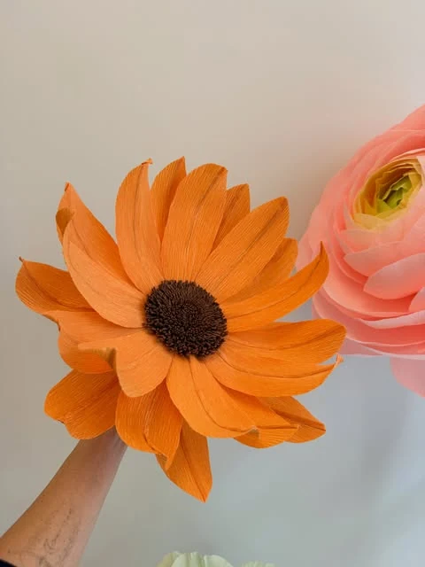
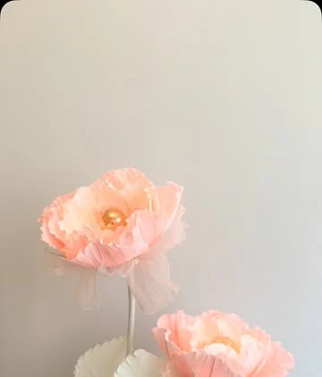

01
Doğum odası süsleme
Hastane odası kapısı için tül ve kreponla hazırlanan dev çiçek aranjmanları. Yeni bir hayatın ilk karşılaması.
Doğum odası süsü sayfası DM ile fiyat alDev çiçek tasarımları · El yapımı
Tül, krapon ve organzeden, tek tek elde şekillendirilen dev çiçekler. Doğum odası kapısından düğün arka fonuna, vitrinden lambadere.


Dev lilyum & karahindibaTül · krapon · organze
Eden Floral Art
Boyu insanı aşan çiçekler. Her yaprağı elde kesilir, her çiçek sabırla şekillenir; çünkü bazı anlar, sıradan bir buketle anlatılamaz.
Hizmetler
Hastane odası kapısı için tül ve kreponla hazırlanan dev çiçek aranjmanları. Yeni bir hayatın ilk karşılaması.
Doğum odası süsü sayfası DM ile fiyat al
Gelin-damat yolu, takı töreni ve nişan arka fonları için dev lilyum, şakayık ve ranunculus setleri.
Nişan & düğün süsleme sayfası DM ile fiyat al
Etkinlik ve organizasyon firmaları için konsepte özel dev çiçek ve arka fon tasarımları. İş birliği için yazın.
Organizasyon firmaları sayfası İş birliği için DM
Mağaza vitrinleri ve dinlenme köşeleri için şakayık, karahindiba ve lilyumlarla sezona özel tasarımlar.
Vitrin tasarımı sayfası DM ile fiyat al
Organze ve kağıt çiçeklerin ışıkla buluştuğu lambaderler ve masa lambaları. Dilediğiniz renkte, dilediğiniz model.

Atölyeden
Her sene bir kaç çiçek ekleye ekleye geldiğimiz sonuç.
Galeri
Kaydırdıkça ilerlerYana kaydırın



Birlikte çalıştıklarımız
Doğum odası önü için tül ve kreponla hazırladığımız çiçek aranjmanı.
Geçen sene vitrinleri şakayıklarla süsledik; bu sefer dinlenme köşesi için dandelion ve lilyumlarla köşe dekoru tasarladık.
Bizi Viyana'dan bulan bir çift, düğünleri için lilyum setimizi seçti. Biz de çiçeklerimizle Tekirdağ'a gittik.
Nasıl çalışıyoruz
Renk, tarih ve hayalinizi Instagram'dan bize iletin.
Size özel tasarımı ve fiyatı birlikte netleştirelim.
Çiçekleriniz atölyede tek tek elde hazırlanır.
Türkiye geneli kargo ile gönderilir; kurulum için DM'den konuşalım.
Sıkça sorulanlar
Her çiçek elde hazırlandığı için tarihiniz netleşir netleşmez yazmanızı öneririz. Müsaitlik tarihe ve işin büyüklüğüne göre değişir; en doğru bilgiyi DM'den verelim.
Evet, Türkiye'nin her yerine kargo ile gönderiyoruz. Süre ve ücret, ürüne ve adrese göre değişir; DM'den birlikte netleştirelim.
Evet. İstenilen renk ve modelde çalışabiliyoruz. Mekânınızın paletini ve fikrinizi yazmanız yeterli.
Evet, organizasyon firmalarına özel tasarımlar hazırlıyoruz. Konsepti, tarihi ve adedi DM'den yazın; size özel dönüş yapalım.
Fiyat; çiçeğin boyutuna, adedine, rengine ve tasarımın kapsamına göre değişir. Fikrinizi DM'den yazın, size özel fiyat verelim.
Seçenekler tasarıma ve etkinliğe göre değişebilir. Lambaderler gibi hazır modeller için Shopier mağazamıza da göz atabilirsiniz.